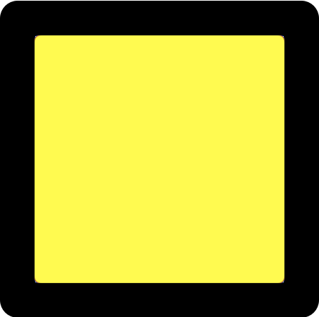

Tutorial 1: Basic Programming
Task:
Move the yellow box  from the left side of Station A to the right side.
You can program this task in four steps. You can click on each step to get more detailed instructions.
- Create a new task
- Open the
 menu below and drag the
menu below and drag the  block from there onto the canvas. Attach it to the bottom of the
block from there onto the canvas. Attach it to the bottom of the  block.
block. - Click on
 and change the task's name so that it describes what you want to do at a station. For this task, you can for example pick the name "Move box to the right".
and change the task's name so that it describes what you want to do at a station. For this task, you can for example pick the name "Move box to the right". - Assign the task to the station that you want to robot to do work at. Click on
 and select "Station A".
and select "Station A".
- Open the
- Program the robot to pick up the block
- When you selected the task block, a new editor appeared on the right: the task editor. This editor allows you to program the what the robot should do while it is at a workstation.
- Open the
 menu in the task editor and drag the
menu in the task editor and drag the  block onto the canvas. Attach it to the bottom of the existing block in the task editor.
block onto the canvas. Attach it to the bottom of the existing block in the task editor. - Some robot commands, like the one you just added to the program, require a target location. To define a new location, open the
 menu below and select
menu below and select  .
. - Select the location where the robot should pick up the box. In this case, it is the bottom left of the station. You can give this location a different name or just use the suggested default name.
- A new block is added to the menu for the location you just created. Drag this block onto the canvas and attach it to the right side of , replacing the "<location>" placeholder.
- Program the robot to place the block
- Open the menu again and drag the
 block onto the canvas. Attach it to the bottom of the existing blocks.
block onto the canvas. Attach it to the bottom of the existing blocks. - Define a new target location for this command, just as you did before. This time, the location should be the bottom right of the station.
- Attach this newly defined location to the block.
- Open the
- Test the program
- You have successfully programmed the entire task. Test your solution by clicking the button below. Watch how the robot executes each step of the program.
Click here to continue with the next tutorial.